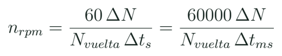
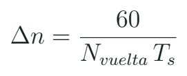
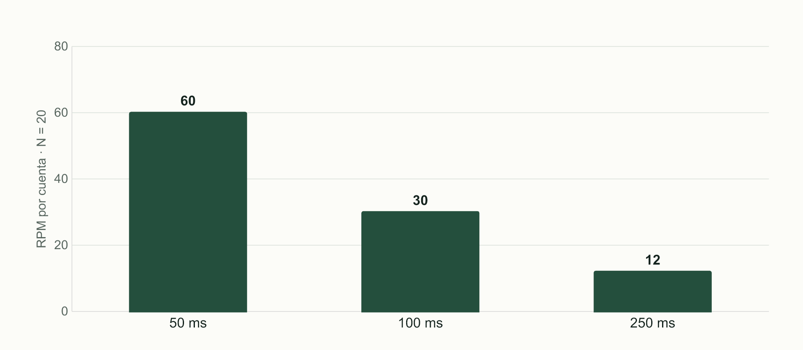

Encoder e interrupciones: medir velocidad con una definición
Calcular RPM desde pulsos usando el conteo por vuelta y el tiempo realmente transcurrido.
Contar no es todavía medir RPM
Un encoder transforma movimiento en señales que el programa puede contar. El número de pulsos solo tiene significado de velocidad cuando sabemos cuánto movimiento representa y en qué tiempo ocurrió. Un sensor puede especificar pulsos por revolución del eje del motor, mientras el proyecto observa el eje de salida de una reducción. Además, una biblioteca puede contar un flanco, ambos flancos o transiciones de dos canales. La definición que importa es la cuenta efectiva por vuelta de la referencia observada.
Datos necesarios
| Dato | Pregunta | Unidad |
|---|---|---|
| Cuenta efectiva por vuelta | ¿Qué flancos cuenta? | cuentas/vuelta |
| Ventana real | ¿Cuánto tiempo pasó? | s o ms |
| Referencia mecánica | ¿Qué eje se observa? | Identificador |
| Conteo | ¿Qué ocurrió en la ventana? | cuentas |
El proyecto de motor de la web no incluye esta medición, por eso se añade como práctica nueva. Se puede comenzar con un generador de pulsos del banco o un modelo de señal. Después se relaciona con un encoder real identificado. No se asignan 20 cuentas por vuelta a cualquier motor: ese número es una constante de ejercicio que se sustituye al caracterizar el dispositivo.
Conversión con unidades

Doce cuentas en una ventana
Se cuentan 12 flancos durante 100 ms. La referencia comprobada es 20 flancos por vuelta del eje observado. ¿Qué velocidad media representa?
Ver razonamiento del caso
12/20 = 0,6 vueltas en 0,1 s. Son 6 vueltas por segundo y, por tanto, 360 RPM.
Si realmente transcurrieron 110 ms, usar 100 ms en la cuenta sobreestimaría la velocidad. El código conserva elapsed = now-last y utiliza esa duración. La ventana aporta una media durante un intervalo; no es una velocidad instantánea perfecta. En un cambio rápido, una ventana larga mezcla estados anteriores con el más reciente.
Una misma cuenta y dos referencias
| Referencia | Duración | Resultado |
|---|---|---|
| 20 cuentas/vuelta | 100 ms, 12 cuentas | 360 RPM |
| 20 cuentas/vuelta | 110 ms, 12 cuentas | 327,3 RPM |
| 40 cuentas/vuelta | 100 ms, 12 cuentas | 180 RPM |
Resolución temporal y de conteo

Con 20 cuentas por vuelta y ventana de 0,1 s, una sola cuenta representa 30 RPM. Un número con muchos decimales no añade información que el conteo no tiene. Una ventana de 0,25 s reduce ese salto a 12 RPM, pero tarda más en describir un cambio. El equipo compara esa compensación con el comportamiento que desea observar.
Caso didáctico, 20 cuentas/vuelta
| Ventana | Salto por cuenta | Compensación |
|---|---|---|
| 50 ms | 60 RPM | Respuesta más frecuente |
| 100 ms | 30 RPM | Condición de referencia |
| 250 ms | 12 RPM | Promedio más prolongado |
Un encoder de dos canales también puede permitir conocer dirección mediante la relación entre sus señales. La primera práctica cuenta solo flancos ascendentes de un canal para que su denominador sea transparente. La cuadratura se deja como ampliación después de verificar una vuelta y un método. Añadir canales sin revisar el factor de conteo puede multiplicar por dos o cuatro una lectura aparente.

Qué hace la interrupción y qué hace loop()
Reparto de tareas en c10_encoder
void IRAM_ATTR edge() {
portENTER_CRITICAL_ISR(&mux);
++edges;
portEXIT_CRITICAL_ISR(&mux);
}
// En loop(): copiar y poner a cero como una operacion.
portENTER_CRITICAL(&mux);
uint32_t count = edges;
edges = 0;
portEXIT_CRITICAL(&mux);La rutina de interrupción realiza una tarea breve: conservar el evento de conteo. La conversión, impresión y decisión se hacen fuera. volatile evita ciertas suposiciones del compilador sobre accesos, pero no convierte una secuencia de copiar y poner a cero en una operación indivisible. Por eso el ejemplo protege ese intercambio de manera explícita.
La señal debe tener niveles compatibles y una forma que el sistema pueda interpretar. Un encoder con salida de colector abierto puede necesitar polarización; otro módulo puede entregar una señal que requiere adaptación. El banco identifica ese tipo de salida antes de conectar. Las transiciones espurias y el ruido no se corrigen inventando un nuevo número de cuentas por vuelta: se investiga la señal y el montaje.
Laboratorio de una vuelta y una ventana
- Identifica el eje y la convención de conteo que utilizarás.
- Antes de convertir a RPM, comprueba las cuentas de una vuelta observada o de una señal conocida.
- Ejecuta c10_encoder con el generador de pulsos o el encoder preparado.
- Calcula manualmente una fila del registro con elapsed real.
- Compara ventanas de 50, 100 y 250 ms sin cambiar a la vez el método de conteo.
- Busca un error de factor dos o cuatro en un caso de prueba del docente.
- Conserva fuente de señal, condiciones y resultado con unidades.
El alumno sin encoder resuelve el conjunto de pulsos del curso y explica qué falta para trasladarlo a un motor real. En el taller compartido se contrasta el método con hardware disponible. Esta organización permite estudiar la medida antes de comprar un componente adicional y evita anunciar un encoder como parte del kit cuando su inventario aún no se ha confirmado.
Qué necesita el controlador de esta medición
El lazo de control recibirá una estimación de velocidad con su periodo, dispersión y posibilidad de fallo. Un valor cero puede corresponder a motor parado, una ventana sin pulsos o una señal ausente. La interpretación exige contexto. La aplicación conoce si ordenó movimiento, cuánto tiempo pasó y qué otras comprobaciones existen. Esos datos ayudan a formular un estado de diagnóstico, aunque no convierten cualquier ausencia de pulsos en una causa demostrada.
Precisión aparente
El monitor muestra 360,000 RPM con un salto de 30 RPM por cuenta. ¿Qué comunican esos tres decimales?
Ver razonamiento del caso
No demuestran una precisión milésima. El formato de impresión debe respetar la información y las limitaciones del método.
Investiga qué significa PPR o CPR en la ficha concreta de un encoder. Copia la definición, no solo el número. Si hay una reducción, señala a qué eje pertenece. Prepara una frase completa de tu método: “cuento flancos ascendentes de A, con tantas cuentas por vuelta del eje de salida, durante el intervalo registrado”. Esa frase será parte de la entrega del lazo cerrado.
Práctica guiada
- Mostrar una señal de pulsos antes de convertir unidades.
- Resolver 12 cuentas y contrastar dos duraciones reales.
- Separar ISR y cálculo con el programa incluido.
- Comprobar definición de vuelta, conteo y ventana.
Preguntas de cierre
¿PPR basta sin saber qué cuenta la biblioteca?
No. Se necesita la cuenta efectiva del método y la referencia mecánica.
¿volatile protege copiar y reiniciar un contador?
No garantiza que la secuencia sea indivisible; se coordina el acceso compartido.
¿Ventana mayor mejora todo?
Reduce el salto de conteo, pero prolonga el promedio y cambia la respuesta temporal.
Entrega
Conversión de una fila, definición de cuenta por vuelta y comparación de ventanas.
Proyectos MECRO relacionados
- 15. Control de Motor Industrial · Banco nuevo. Motor, encoder, control; web sin simulador ni imagen
Fuentes para ampliar
[MECRO] MECRO. Laboratorio Electrónica con ESP32: veinte proyectos.
[GPIO] Espressif Systems. GPIO y restricciones de ESP32 clásico.
[UART] Espressif Systems. Arduino-ESP32: Serial/UART.
[FBS] Åström y Murray. Feedback Systems: An Introduction for Scientists and Engineers; edición electrónica de los autores.